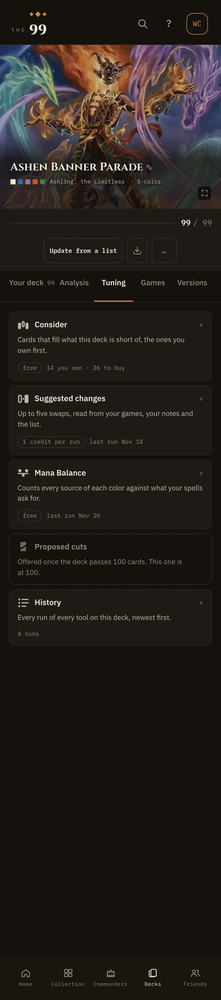
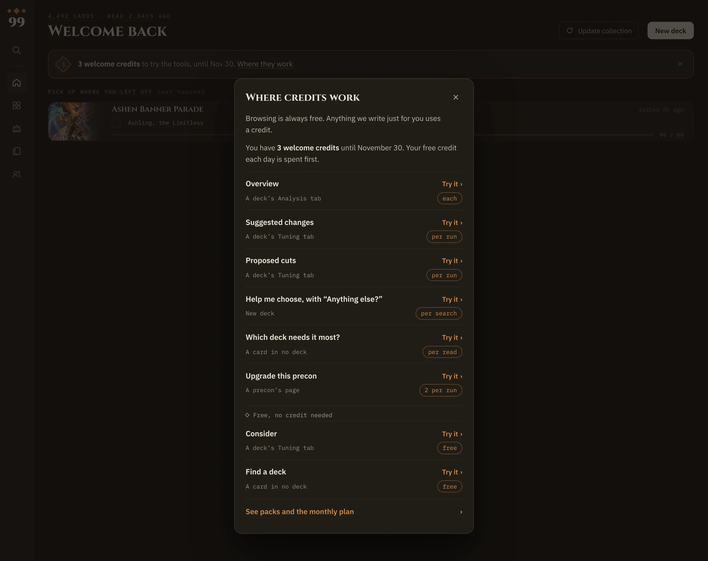

Finding the tools · R1
Three answers to one complaint: "I have a bunch of cards I want to add to my other decks, but I don't know where to go." Find a deck moves to where the cards are, Tuning gets its own tab with Consider in it, and the welcome sheet sends a new player to both. Rendered from main 7563036 with shipped components (the hub, the Consider panel, the Find a deck view, the to-do card row, the segmented switch, the welcome strip and sheet). Figures and art are illustrative.
1 · Find a deck lives where your cards are: /collection
- A call-out under the filters, the deck page's to-do card row as a statement (the you-have-it pattern): eyebrow Find a deck, the door's two diamonds, 212 of your cards are in no deck / Narrow to them, then press a card’s two diamonds to see which of your decks it fits. A bare ✕ closes it for good.
- Under it the shipped segmented switch: All · 2,926 / In no deck · 212. It IS the Availability filter's Free option, one state: choosing it draws the Free chip, clearing the chip goes back to All.
- While the list is narrowed to Free alone, every tile draws the Find a deck press (the door's glyph in the #3202 26px box, 44px hit). It opens the card window straight on Find a deck, the shipped view, with the card as its back press.
- Not on All: most of a collection is in no deck, and a glyph on every tile would be noise. The door in card details and its moment stay as shipped.
- Every Try it for Find a deck already lands on /collection?avail=free: the tour, About's Tools tab and the welcome sheet now arrive on these presses.
2 · Tuning gets a tab; Consider moves into it
- Tabs: Your deck · Analysis · Tuning · Games · Versions. Still five, so the phone row scrolls as it does today. Tuning is drawn for every deck, as the hub already is.
- The Tuning tab is the shipped hub, unchanged in behavior: tiles, a tool opens in place, the desktop underline row, the phone's ‹ Tuning. Its own Tuning heading goes (the tab names it).
- Consider is the first tile, full width from md: free, Cards that fill what this deck is short of, the ones you own first., 14 you own · 26 to buy. It opens the shipped Consider panel in place.
- Analysis keeps the reading: verdict, Overview, strategy, bracket, findings. The hub leaves its foot.
- Every shortcut retargets the tab: the to-do card's Cuts, the land cell's balance mana →, the role cells' consider → (Tuning, Consider open), and Try it for the Tune tools.
3 · The welcome sheet points at the new homes
- The Home strip is unchanged: one line, Where they work, ✕.
- Every row now has Try it. Overview lands on a deck's Analysis tab; Which deck needs it most? lands on /collection, In no deck, presses on.
- Where lines: Suggested changes and Proposed cuts read A deck’s Tuning tab; Which deck needs it most? reads A card in no deck.
- A free block before the teaser, in the sheet's shipped reason-line form: Free, no credit needed, then Consider and Find a deck, each with a free pill and Try it. A new player reading where credits go also learns the two free tools that answer "where do my cards go".

Collection, In no deck
Call-out, switch, a press on every tile.

The Tuning tab
Consider first, then the shipped tiles.

Where credits work
Every row lands; the free block at the foot.
Q1 · Does Tuning open straight on Consider while a deck is short?
Recommended: A. One rule for the tab, and Consider is the first, full-width tile, so the press is a short one.
Q2 · Keep the free block in Where credits work?
Recommended: A. The sheet is the one place a new player is told what the tools are, and it already says browsing is free.
Q3 · One word for the filter: In no deck, or Free?
Recommended: A. "Free" reads as a price to a new player; "In no deck" says what it filters.
- The card window's Find a deck door and its moment (M8).
- The hub's tools, their costs and History.
- Home's strip, its states and its ✕.
- The Analysis tab's reading.